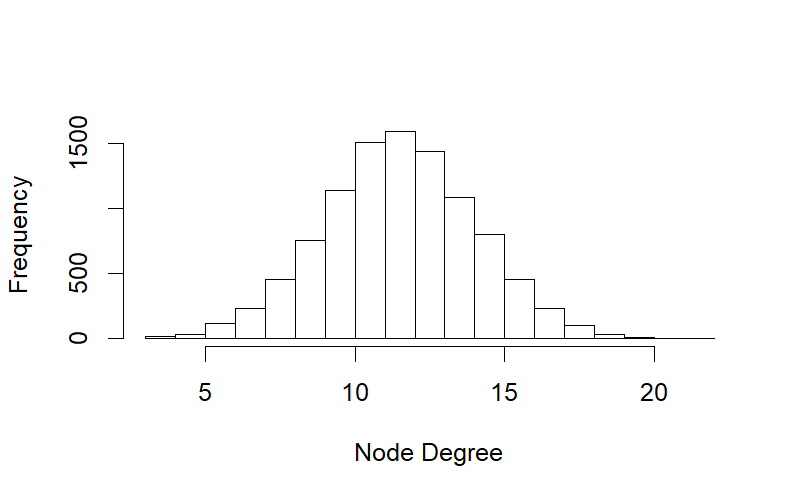
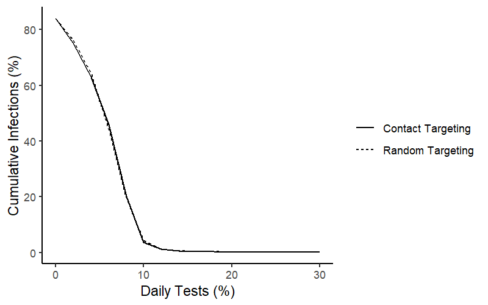
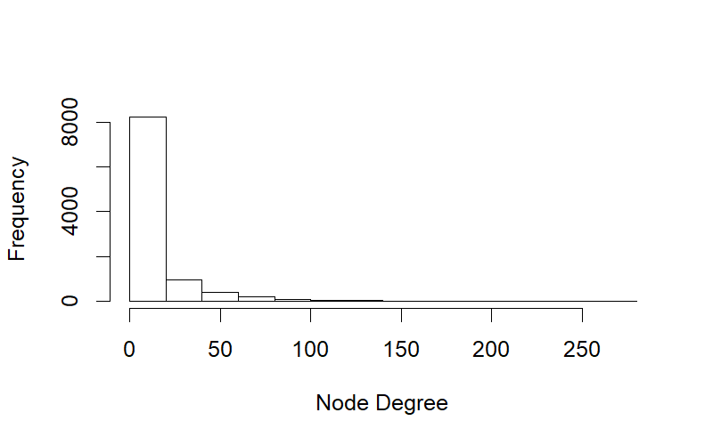
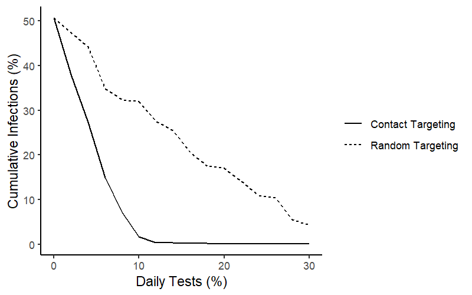

The Contact Paradox
The Friendship Paradox states that, on average, your friends have more friends than you do. (It’s not your fault. It’s just a property non-random sampling on networks.) Note that in the network below only agent 3 is more popular than his friends.

The epidemiological corollary to this rule is that your contacts have more contacts than you. We can use this fact to help identify and isolate “super-spreaders” during an epidemic, maximizing the effectiveness of the tests we have available.
Model Assumptions
Consider an agent-based SIR model with the following assumptions:
- \(R_0 = 2.5\) (i.e., in the absence of intervention, we expect each infected person to infect 2.5 others before recovering).
- Infections last 10 days.
- Initial prevalence is 1 per 1,000 agents.
- There is significant asymptomatic and/or presymptomatic spread, so we cannot rely on testing symptomatic individuals and must broadly test asymptomatics.
- There are 10,000 agents with an average of 12 contacts each.
Each day, we administer tests to a fraction of the population pct_tested. If an agent tests positive, they are removed (quarantined).1 Consider two strategies for how to target these tests:
- Random Targeting: Select agents at random and test
- Contact Targeting: Select agents at random and test one of their contacts
You can find replication code here.
Results
If the degree distribution of the contact network is normally distributed, then there is little difference between the most connected individuals and the least connected individuals.

In this universe, Contact Targeting does no better than Random Targeting. It doesn’t do any worse, but since there are no super-spreaders, it doesn’t offer any systematic advantage.

But suppose (as is likely the case) that the degree distribution is fat-tailed. Most agents have relatively few contacts, but some agents have an enormous number of contacts. (Think service sector workers, conference attendees, etc.) This might look more like a gamma distribution:

In this universe, you can suppress the epidemic with significantly fewer tests per day through Contact Targeting instead of Random Targeting. Because your contacts tend to have more contacts than you, we can identify the super-spreader nodes through simple contact tracing without having to go through the arduous task of mapping the entire network.2

As the above figure shows, you can suppress the epidemic with 3X fewer tests by targeting contacts instead of targeting agents at random. The exact number of tests required will obviously depend on the epidemiological parameters, but the implication is clear. If you’re mass testing people in response to an epidemic (see, for instance, Paul Romer’s roadmap), there is no advantage to allocating tests at random. You can always do at least as well by allocating tests to contacts.
Assume a zero false negative rate on PCR tests. Since the false negative rate remains constant across targeting conditions, it does not affect the results.↩
See also https://arxiv.org/abs/1004.4792↩